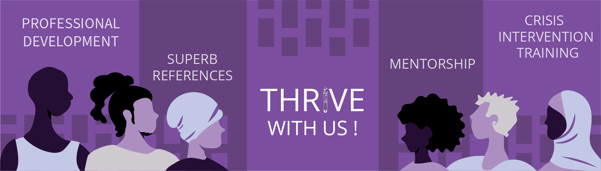

Recruiting Empathy: Crisis Responder Undergraduate Internship @THRIVE (RECRUIT)

THRIVE’s RECRUIT internship program centers undergraduate students whose identities are marginalized.
* We dream of building a team that is representative of the breadth of our communities. We encourage applications from underrepresented LGBTQ2S+ persons of color, persons living with disabilities, Two Spirit, trans-femme and/or femme nonbinary individuals, and/or veterans. Additionally, we pride ourselves in working with people who struggle to gain traditional internships, whether that be because you are in a rural area, do not have transportation, are unable to find affirming support for your identity, working multiple jobs, caregiving, or any other barriers you might have faced. THRIVE’s team is majority POC and LGBTQ2S+ and we deeply value increasing representation.
Our RECRUITs work remotely and internationally. If you have questions about whether we can host your internship, please let us know!
**We are not currently offering paid internships.
Click here to submit your interest form. We will reply back within 48 hours.
Click here to see what previous RECRUITs say about the program.
Welcome
You may be a current undergraduate student within the breadth of STEMM fields who has struggled to gain internship experience due to any number of marginalizing barriers. If you are seeking an internship or practicum that will:
- Meet you where you are as a student who experiences marginalization
- Empower you and give you undeniable professional experience
- Equip you with the skills to directly impact the lives of others who may share your intersecting identities and experiences
- Provide you with extensive training and 1:1 mentorship
- Offer flexibility in your work hours help you prioritize other aspects of your life
- Affirm your identity and increase your network
this opportunity might be just right for you!
Program
The THRIVE RECRUIT Internship combines significant training, mentorship, and applied skills development in a flexible number of hours per week. This volunteer-based internship is designed to meet the varying needs of undergraduate students in our communities by
- Being customizable to your specific needs,
- Being adjustable between 200 and 400 total hours,
- Being adjustable between one semester and one year in length,
- Please note that THRIVE believes in your training, counts your training hours into your customized RECRUIT program, and invests a $6000 value in personally training and mentoring each RECRUIT. However, due to its nature, our training is emotionally laborious and intense. We typically recommend that students take a training option which is 10 - 12 weeks long at 5 - 6 hours per week, meaning that for most people who want to complete their internship skills in a single semester, it is advisable to complete training with us the semester before you begin your skills practice as a Crisis Responder on THRIVE Lifeline.
- Being flexible to your need to balance your studies, jobs, and family / community roles while completing this program, and
- Lending our experience to help you to develop, maintain, and articulate your skills to your college or university as well as your future graduate programs, employers, and/or volunteer supervisors. As a RECRUIT, you join a collaborative community of volunteers committed to serving our communities.
THRIVE’s unique training is centered in Whole-Human, empathetic support, cross-identity affirmation, and trauma-informed communication. When you are onboarded, you will be paired with a mentor who will work directly with you throughout your training period.
Please let us know if your degree program has specific requirements for your mentor.
Training
60 hours of crisis response training will include:
- Professional and interpersonal skills
- Navigating triggering and unfamiliar topics
- Common pitfalls in our language or responses
- Conducting consensual and affirming risk assessments
- Being alert to signs of distress or escalation
- Affirming identity first; recognizing identities you share versus those you do not
- Awareness of individual and community trauma and its impact
- Recognizing your own trauma and building a self care routine that allows you to prioritize a texter’s needs
- Safe deescalation techniques
- Trauma-informed and accessible grounding techniques
- Affirming referrals and / or resources
- Experiential learning
- Reading a variety of scenarios and learning a variety of response perspectives
- Practicing a minimum of 10 text-based scenarios where you will actively respond to a practice texter in crisis
- Optional priority access to free Mental Health First Aid certification
Crisis Response
Your communication, support, and advocacy skills will be put into practice as a Crisis Responder on THRIVE Lifeline, after you complete our comprehensive Crisis Response for Marginalized Communities training. RECRUITs take 2+ on-call shifts per week that last for 3 hours each.
*Please note that crisis response shifts must be scheduled during our busiest hours – this allows you to get the most experience and opportunities to support texters, and also supports THRIVE the most. These hours are currently 3p-6a ET, but can change fluidly, and you will work with your program supervisors to schedule shifts within the range of busier hours on dates and times that work best for you.
Professional and Leadership Development
We understand the barriers that many in our communities face and the impacts to resumes, skill building, and academic training that result. Depending on your customized internship program schedule, interests, and experiences, we will work with you to customize your professional and leadership development. Professional activities may include small projects that can be completed in a few hours, and/or a capstone project that may be completed in up to 100 hours. We additionally provide you with training and experience in a variety of leadership roles that will help you to directly improve your support of marginalized communities.
We provide superb references, support writing of funding applications and personal statements, and priority access to free Mental Health First Aid certification for adults (a $170 value) for our RECRUITs who are seeking a nationally accredited professional certification. We are dedicated to empowering you to reach yourpersonal dreams!
What we need from you
Interested RECRUITs should:
Be undergraduate students
- We understand that barriers to entry may mean you are interested in an internship or practicum with THRIVE and not be an undergraduate student. If this is true for you, please share your circumstances with us in our interest form so that we may respond to your specific needs.
Be seeking an unpaid internship or practicum experience that centers people with multiply marginalized identities
Be 18+ years of age
Have reliable access to a computer with high speed internet and privacy
Be able to complete all agreed-upon RECRUIT internship program requirements within specified time frame
Virtually attend orientation, two 4-hour training sessions, and one 2-hour demo
Attend weekly one-on-one meetings with your mentor
Affirm all identities, especially those that are least represented
Be willing to work in a collaborative, supportive environment and dialogue openly
Be willing to learn and grow through supportive and constructive feedback
Be willing to offer support to other team members, especially those who are responding to texters in crisis
How we will help you THRIVE
THRIVE RECRUITs gain:
- 200 - 400 supported internship / practicum hours
- Inclusive and accessible crisis intervention training
- Training in and exposure to a variety of marginalized identities and experiences
- Trauma-informed non-carceral crisis intervention and deescalation skills
- Confidence to support your own community
- One-on-one weekly mentorship and a team who supports you with diverse perspectives and resources when you are on THRIVE Lifeline
- Leadership and professional development training and skills application
- Recommendation letters and assistance with graduate school, funding, and / or professional applications
Click here to submit your interest form. We will reply back within 48 hours.
Our application process
THRIVE RECRUIT Applicants can expect the following:
- Submit your interest form
- We will learn a little bit more about you and determine your timing and needs as well as whether we have the resources to provide you with a program that will meet your timing and needs.
- Depending on availability and our ability to meet your timing and needs, we will invite you to apply. You can expect between 1 - 2 hours to complete our internship application.
- After application review, we may invite you to interview with us. We will use this time to speak more specifically about your specific program needs and how we can customize your internship to support those needs.
- After interviews, our team designs internship program schedules. We share program and training schedules for final review before submitting an official offer letter to our intern candidates.
- Once an offer letter has been accepted, our final steps include an internship handbook review and signature prior to connecting interns with their mentors and beginning our onboarding process.